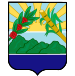

Dominican Republic
Made by Julio Lugo 11-III
- Azua
- Senator: Lia Ynocencia Diaz
- Population of province is of 111,269
- Boaruco
- Senator: Melania Salvador Jimenez
- Population of province is of 101,306 ">
- Barahona
- Senator: Jose Manuel Del Castillo Savinon
- Population of province is of 1,739.38 
- Dajabon
- Senator: David Rafael Sosa
- Population of province is of 1,020.73
- Districto Nacional
- Senator: Faride Virginia Raful
- Population of province is of 104.44
- Duarte
- Senator: Franklin Martin Romero
- Population of province is of 1,605.35,
- Elias Pinas
- Senator: Arys Yvan
- Population of province is of 1,426.20
- link text
- Senator: Santiago Jose Zorrila
- Population of province is of 1.786.80
- Espaillat
- Senator: Carlos Gomez Urena
- Population of province is of 838.62
- Hato Mayor
- Senator: Cristobal Medrano Perez
- Population of province is of 1,329.29
- Hermanas Mirabal
- Senator: Virgilio Cedano Cedano
- Population of province is of 440.43
- Independencia
- Senator: Ivan Jose Silva
- Population of province is of 2,006.44
- Altagracia
- Senator: Ramon Rogelio Genao
- Population of province is of 3,020.34
- La Romana
- Senator: iVAN Jose Silva
- Population of province is of 653.95
- La Vega
- Senator: Ramon Rogelio Genao
- Population of province is of 2,287.24
- La Vega
- Maria Trinidad Sanchez
- Senator: Alexis Victoria Yeb
- Population of province is of 1,271.71
- Monsenor Noeul
- Senator: Hector Elpidio Acosta
- Population of province is of 1,924.35
- Monte Cristi
- Senator: Ramon Antonio Pimentel
- Population of province is of 1,924.35
- Monste Plata
- Senator: Lenin Valdez Lopez
- Population of province is of 2,632.14
- Pedernales
- Senator: Dionis Alfonso Sanchez
- Population of province is of 2,074.53
- Puerto Plata
- Senator: Ginnette Altagracia Bournigal del Jimenez
- Population of province is of 1,852.90
- Samana
- Senator: Pedro Manuel Catrain Bonilla
- Population of province is of 853.74
- Sanchez Ramirez
- Senator: Ricardo de los Santos Polanco
- Population of province is of 1,196.13
- San Cristobal
- Senator: Franklin Alberto Rodriguez
- Population of province is of 1,265.77
- San Jose de Ocoa
- Senator: Jose Antonio Castillo
- Population of province is of 855.4
- San Juan
- Senator: Felix Ramon Bautista Rosario
- Population of province is of 3,569.39
- San Pedro de Macoris
- Senator: Franklin Ysaias Pena
- Population of province is of 1,255.46
- Santiago
- Senator: Rafael Eduardo Estrella
- Population of province is of 2,836.51
- Santiago Rodriguez
- Senator: Casimiro Antonio Marte
- Population of province is of 1,111.14
- Santo Domingo
- Senator: Antonio Manuel Tavares
- Population of province is of 1,301.84
- Valverde
- Senator: Martin Edilberto Nolasco
- Population of province is of 823.38